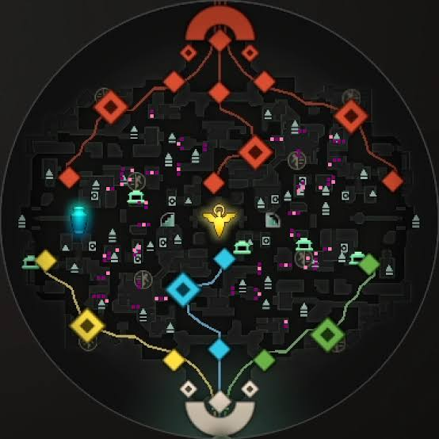

Mapas
Deadlock chama-se The Cursed Apple (uma versão fantástica e oculta de Nova York).
Estrutura de Rotas (Lanes)
- 3 Rotas Principais: O mapa possui três trilhas coloridas que conectam as bases de ambas as equipes:
- York (Amarela - Esquerda)
- Broadway (Azul - Meio)
- Greenwich (Verde - Direita)
